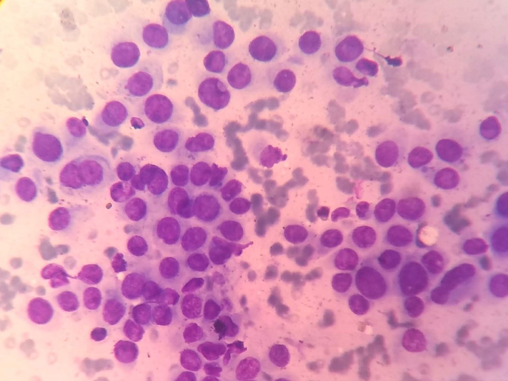
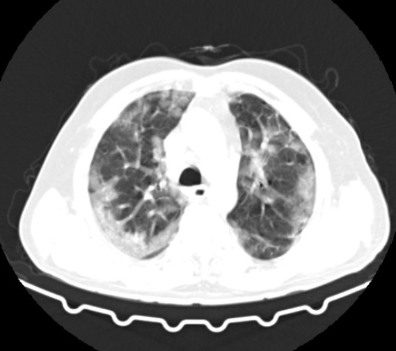
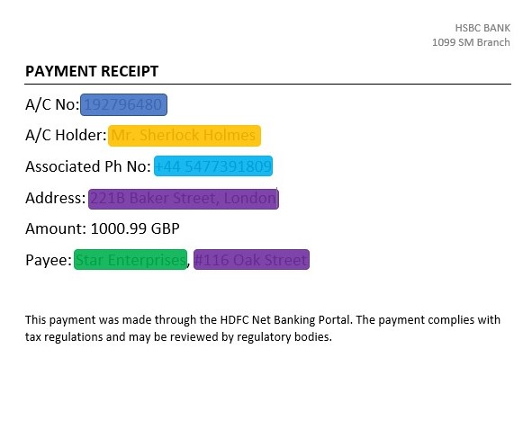

Research Projects

Automated Diagnosis of Ductal Carcinoma (Breast Cancer) from FNAC Images with Deep Learning
This is a Computer-Aided Diagnosis project aimed at speeding up diagnosis and easing the Breast Cancer burden on diagnostic labs. Convolutional Neural Networks (CNNs) were used to detect microscopic cell clusters in whole slide images from Fine Needle Aspiration and classify them as benign (non-cancerous) or malignant (cancerous).
I labeled, annotated and augmented cytology images collected from two Pathology Labs. I then performed a comparative study on the efficiency of CNN classifiers (AlexNet, VGG16, 19, ResNet-50, Inception-V3) for cytology images and built a custom CNN classifier which achieved the highest accuracy (97%).
To minimize the time and effort needed for data preparation, I integrated YOLO for automatic Region Proposal and later used YOLO as a fully-independent pipeline for cell cluster detection and classification.

COVID-19 Diagnosis and Affected Lung Lesion Segmentation in CT-scans
This is a Computer-Aided Diagnosis project aimed at speeding diagnosis and easing the Breast Cancer burden on diagnostic labs. I have used Convolutional Neural Networks (CNNs) to detect microscopic cell clusters in whole slide images from Fine Needle Aspiration and classify them as benign (non-cancerous) or malignant (cancerous).
I have collected cytology images from two Pathology Laboratories in India and labeled, annotated and augmented them. I have done a comparative study of classifier CNNs, built a custom CNN classifier which achieved higher accuracy than standard architectures (97%), used YOLO for Region Proposal and then as a fully-independent pipeline for cell cluster detection and classification.

PII (Personally Identifiable Information) Identification and Redaction in Documents
This is a Computer-Aided Diagnosis project aimed at speeding diagnosis and easing the Breast Cancer burden on diagnostic labs. I have used Convolutional Neural Networks (CNNs) to detect microscopic cell clusters in whole slide images from Fine Needle Aspiration and classify them as benign (non-cancerous) or malignant (cancerous).
I have collected cytology images from two Pathology Laboratories in India and labeled, annotated and augmented them. I have done a comparative study of classifier CNNs, built a custom CNN classifier which achieved higher accuracy than standard architectures (97%), used YOLO for Region Proposal and then as a fully-independent pipeline for cell cluster detection and classification.
Research Papers
"YOLO as a Region Proposal Network for Diagnosing Breast Cancer"- Original Research paper accepted at Grace Hopper Celebration India 2020 (IEEE Conference ID: 50508) (17th-20th Feb 2021)
"Automated Diagnosis of Breast Cancer with RoI Detection using YOLO and Heuristics"- Accepted at 17th ICDCIT (International Conference on Distributed Computing and Internet Technology) (7th-10th Jan 2021)
(here)
Under Revision:
"BFCNet: A CNN for Diagnosis of Ductal Carcinoma in Breast from Cytology Images"- Pattern Analysis and Applications (Springer)